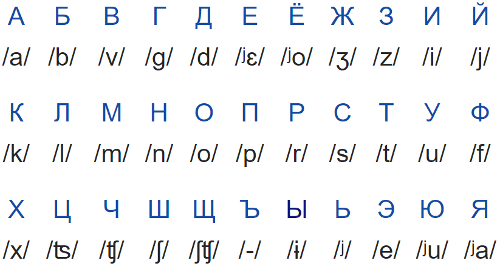
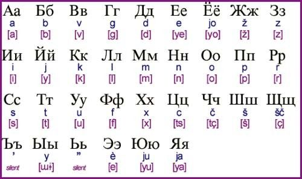

Notas de idioma ruso
El origen del alfabeto ruso se remonta al siglo IX. Fue introducido por los santos Cirilo y Método para las necesidades de la evangelización de los pueblos eslavos. Se encuentran letras tomadas de los alfabetos griego y latino.

Capítulo1
Dentro del alfabeto cirílico, existen 7 letras que pertenecen al alfabeto latino:
A se pronuncia «A».
E se pronuncia «Ye».
3 se pronuncia «Ze».
K se pronuncia «K».
M se pronuncia «M».
O se pronuncia «O».
T se pronuncia «T».
las palabras en ruso.
Las letras griegas Cada año, miles de alumnos deciden aprender el griego antiguo en la escuela secundaria o en la universidad. Aunque esta lengua esté «muerta», aún se continúan utilizando las letras en determinados alfabetos y, más aún, en el alfabeto cirílico.
Si tienes nociones de griego antiguo, podrás aprender el alfabeto ruso más fácilmente y viceversa.
El alfabeto ruso contiene 9 letras griegas:
Б se pronuncia «B». Г se pronuncia «Gue». Д se pronuncia «D». У se pronuncia «Ou». Ф se pronuncia «F». П se pronuncia «P». С se pronuncia «S». Р se pronuncia «R». Л se pronuncia «L».
Esta parte está compuesta únicamente por 15 letras: los signos y su fonética pueden asimilarse con tan solo unas horas de repaso diarias. Escribe las letras rusas para memorizarlas más fácilmente.
Estas son las letras rusas del alfabeto cirílico:
И se pronuncia «I». Й se pronuncia «Yeu». Ц se pronuncia «Tseu». Ч se pronuncia «Tsheu». Н se pronuncia «N». Ш se pronuncia «Sheu». Щ se pronuncia «Shsheu». Х se pronuncia «Kha». Ы se pronuncia «ɨ». Ж se pronuncia «J». В se pronuncia «V». Э se pronuncia «He». Ю se pronuncia «Yo». Я se pronuncia «Ya». Ё se pronuncia «Yo».

El alfabeto ruso: el signo mudo y el signo duro
Una vez que hayas asimilado todos los caracteres anteriores, solo te quedarán dos letras por aprender del alfabeto cirílico: el signo mudo y el signo duro.
Algunos alumnos de ruso, en ocasiones, no tienen en cuenta lo abstractos que pueden llegar a ser estos caracteres, puesto que son letras que no se vocalizan y que a menudo se reservan únicamente a los alumnos más avanzados de ruso.
Sin embargo, es más complicado entender y que nos entiendan los autóctonos rusos si no tenemos en cuenta la importancia de estos dos signos:
El signo duro ъ indica que la consonante precedente no se ha palatalizado.
El signo mudo ь indica que la consonante anterior sí se ha palatalizado.
No se trata tanto de una cuestión de lectura sino más bien de pronunciación: para obtener una buena nota en el examen oficial de ruso (TORFL), por ejemplo, el alumno deberá probar su habilidad para detectar todos los giros lingüísticos de la lengua de Tólstoi.
Para llegar a ser bilingüe, será esencial dominar estos modificadores de la pronunciación.
La técnica akamoto
La técnica akamoto consiste en aprender al menos el 30 % de las letras más utilizadas del alfabeto en tan solo 10 segundos. Anteriormente, quizá hayas visto que se dividen las letras del alfabeto en categorías para aprenderlas más fácilmente.
A través de esta técnica, podrás comprobar cómo puedes aprender las letras más útiles en cuestión de segundos y cómo podrás avanzar y hablar ruso tan rápido como sea posible.
Estas letras (A, K, M, O, T) aparecen en el 30 % de los textos rusos. Esto significa que al aprender y reconocer estas cinco letras, comenzarás a entender los textos en ruso. Buenas noticias, ¿no?
Para recordar estas letras puede recurrir a las combinaciones de letras: Akamoto, kamoto, aktom, tomak...
También te será de ayuda aprender algunas palabras que ya contengan estas letras:
Кот: gato.
Так: entonces.
Атом: átomo.
Там: allí.
ОК: vale.
Words more words here here
| Posición | Palabra rusa | Traducción al español | Categoría gramatical | |
| 201. | стоять | estar de pie; pararse | verbo | |
| 202. | имя | nombre; reputación | nombre | |
| 203. | никогда | nunca | adverbio | |
| 204. | стоить | costar; merecer la pena | verbo | |
| 205. | маленький | pequeño | adjetivo | |
| 206. | ответ | respuesta | nombre | |
| 207. | вода | agua; refresco | nombre | |
| 208. | решение | decisión | nombre | |
| 209. | бог | dios; Dios | nombre | |
| 210. | совсем | completamente, totalmente | adverbio | |
| 211. | язык | idioma, lengua | nombre | |
| 212. | далеко | lejos, alejado | adverbio | |
| 213. | нужный | necesario; útil | adjetivo | |
| 214. | давать | dar; permitir | verbo | |
| 215. | полный | completo; lleno | adjetivo | |
| 216. | российский | de Rusia | adjetivo | |
| 217. | народ | gente, pueblo, nación | nombre | |
| 218. | власть | poder | nombre | |
| 219. | сразу | inmediatamente, ahora mismo | adverbio | |
| 220. | уровень | nivel | nombre | |
| 221. | ночь | noche | nombre | |
| 222. | пора | es hora de | adverbio | |
| 223. | часто | a menudo | adverbio | |
| 224. | развитие | desarrollo | nombre | |
| 225. | программа | programa | nombre | |
| 226. | начало | comienzo, principio | nombre | |
| 227. | никакой | ninguno | pronombre | |
| 228. | оно | ello | pronombre | |
| 229. | главный | principal | adjetivo | |
| 230. | дверь | puerta | nombre | |
| 231. | вместе | juntos | adverbio | |
| 232. | момент | momento, instante | nombre | |
| 233. | закон | ley | nombre | |
| 234. | число | número; fecha, día | nombre | |
| 235. | цель | objetivo, propósito | nombre | |
| 236. | следующий | siguiente, próximo | adjetivo | |
| 237. | написать | escribir | verbo | |
| 238. | отец | padre | nombre | |
| 239. | правда | verdad, certeza | nombre | |
| 240. | нога | pie, pierna | nombre | |
| 241. | старый | viejo, anciano | adjetivo | |
| 242. | помощь | ayuda, asistencia | nombre | |
| 243. | информация | información | nombre | |
| 244. | уж | ya (forma abreviada de "уже́") | adverbio | |
| 245. | тысяча | mil | número | |
| 246. | подобный | similar, parecido | adjetivo | |
| 247. | разный | diferente, diverso | adjetivo | |
| 248. | общий | general, común | adjetivo | |
| 249. | месяц | mes; luna en cuarto creciente/menguante | nombre | |
| 250. | кроме | excepto, aparte de | preposición | |
| 251. | минута | minuto; momento | nombre | |
| 252. | мало | poco | adverbio | |
| 253. | процесс | proceso | nombre | |
| 254. | ситуация | situación | nombre | |
| 255. | смочь | poder, ser capaz de (aspecto perfectivo de "мочь") masterrussian dot com | verbo | |
| 256. | автор | autor | nombre | |
| 257. | начинать | empezar, comenzar | verbo | |
| 258. | форма | forma; uniforme (prenda) | nombre | |
| 259. | голос | voz; voto | nombre | |
| 260. | собственный | propio, personal | adjetivo | |
| 261. | мысль | idea, pensamiento | nombre | |
| 262. | свет | luz, electricidad; mundo, la Tierra | nombre | |
| 263. | качество | calidad | nombre | |
| 264. | школа | escuela | nombre | |
| 265. | всякий | cualquiera, cada | pronombre | |
| 266. | действие | acción; efecto | nombre | |
| 267. | мужчина | hombre | nombre | |
| 268. | область | oblast, provincia, región | nombre | |
| 269. | внимание | atención | nombre | |
| 270. | следовать | seguir; tener que, deber | verbo | |
| 271. | использовать | usar, utilizar | verbo | |
| 272. | дорога | camino, ruta, carretera; viaje | nombre | |
| 273. | связь | conexión, lazo, relación | nombre | |
| 274. | взгляд | mirada, vista; opinión | nombre | |
| 275. | условие | condición, término; masterrussian.com | nombre | |
| 276. | молодой | joven | adjetivo | |
| 277. | скоро | rápido, veloz; pronto | adverbio | |
| 278. | снова | de nuevo, otra vez | adverbio | |
| 279. | любовь | amor | nombre | |
| 280. | основной | principal, fundamental, primario | adjetivo | |
| 281. | становиться | ponerse; convertirse | verbo | |
| 282. | важный | importante | adjetivo | |
| 283. | ждать | esperar | verbo | |
| 284. | вдруг | de repente | adverbio | |
| 285. | игра | juego | nombre | |
| 286. | читать | leer | verbo | |
| 287. | статья | artículo; cláusula | nombre | |
| 288. | организация | organización, entidad | nombre | |
| 289. | средство | medios; remedio | nombre | |
| 290. | существовать | existir, ser | verbo | |
| 291. | душа | alma, espíritu | nombre | |
| 292. | пытаться | intentar, tratar | verbo | |
| 293. | тело | cuerpo, figura | nombre | |
| 294. | посмотреть | mirar, ver, observar | verbo | |
| 295. | общество | sociedad | nombre | |
| 296. | жена | mujer, esposa | nombre | |
| 297. | государство | estado, gobierno | nombre | |
| 298. | оставаться | quedarse | verbo | |
| 299. | совершенно | perfectamente, absolutamente | adverbio | |
| 300. | письмо | carta | nombre |
| Posición | Palabra rusa | Traducción al español | Categoría gramatical | |
| 301. | состояние | condición, estado; fortuna, riqueza | nombre | |
| 302. | вечер | tarde, noche; fiesta | nombre | |
| 303. | настоящий | verdadero, auténtico, real | adjetivo | |
| 304. | назад | atrás, hacia atrás | adverbio | |
| 305. | смысл | sentido, significado | nombre | |
| 306. | мера | medida | nombre | |
| 307. | семья | familia | nombre | |
| 308. | простой | simple, sencillo, común | adjetivo | |
| 309. | вещь | cosa; cosas, pertenencias (si se usa en plural) | nombre | |
| 310. | затем | después, luego | adverbio | |
| 311. | причина | causa, razón, motivo | nombre | |
| 312. | утро | mañana (parte del día) | nombre | |
| 313. | мать | madre | nombre | |
| 314. | рынок | mercado | nombre | |
| 315. | действительно | de verdad, en realidad | adverbio | |
| 316. | происходить | ocurrir, pasar, tener lugar; ser de | verbo | |
| 317. | данный | dado, este | adjetivo | |
| 318. | девушка | chica, una joven; novia | nombre | |
| 319. | вести | guiar; portarse, comportarse; conducir, manejar | verbo | |
| 320. | сколько | cuánto | adverbio | |
| 321. | тема | tema | nombre | |
| 322. | стол | mesa | nombre | |
| 323. | проект | proyecto; plano | nombre | |
| 324. | улица | calle, carretera | nombre | |
| 325. | государственный | estatal, nacional | adjetivo | |
| 326. | помнить | recordar, tener presente | verbo | |
| 327. | называть | llamar, poner nombre | verbo | |
| 328. | точка | punto | nombre | |
| 329. | хотеться | querer | verbo | |
| 330. | нельзя | no se puede, está prohibido | adverbio | |
| 331. | белый | blanco | adjetivo | |
| 332. | центр | centro | nombre | |
| 333. | опять | otra vez, de nuevo | adverbio | |
| 334. | равный | igual | adjetivo | |
| 335. | против | contra | adverbio | |
| 336. | куда | hacia donde, hacia dónde | adverbio | |
| 337. | неделя | semana | nombre | |
| 338. | идея | idea, concepto | nombre | |
| 339. | особенно | especialmente, en particular | adverbio | |
| 340. | комната | habitación, cuerto, estancia | nombre | |
| 341. | цена | precio | nombre | |
| 342. | наконец | por fin, finalmente | adverbio | |
| 343. | известный | conocido, famoso | adjetivo | |
| 344. | среди | entre | preposición | |
| 345. | сын | hijo | nombre | |
| 346. | деятельность | actividad, trabajo | nombre | |
| 347. | играть | jugar; tocar (música) | verbo | |
| 348. | правило | regla, regulación | nombre | |
| 349. | советский | soviético | adjetivo | |
| 350. | лучший | el mejor | adjetivo | |
| 351. | движение | movimiento; tráfico | nombre | |
| 352. | заниматься | practicar; estar ocupado con, ocuparse de; masterrussian.com | verbo | |
| 353. | точно | justo, exactamente | partícula | |
| 354. | огромный | enorme, gigante | adjetivo | |
| 355. | мама | mamá | nombre | |
| 356. | задача | tarea, misión, objetivo | nombre | |
| 357. | великий | gran | adjetivo | |
| 358. | количество | cantidad | nombre | |
| 359. | чувство | sentimiento; sentido (sensorial) | nombre | |
| 360. | иногда | a veces | adverbio | |
| 361. | слишком | demasiado, excesivamente | adverbio | |
| 362. | смерть | muerte | nombre | |
| 363. | достаточно | suficiente, bastante | adverbio, determinante, pronombre | |
| 364. | лежать | estar tumbado, yacer; estar situado | verbo | |
| 365. | мнение | opinión | nombre | |
| 366. | труд | trabajo, labor | nombre | |
| 367. | пять | cinco | número | |
| 368. | третий | tercero | número | |
| 369. | бывать | suceder, ocurrir; estar en, visitar | verbo | |
| 370. | готовый | listo, preparado | adjetivo | |
| 371. | быстро | rápido, veloz | adverbio | |
| 372. | чёрный | negro | adjetivo | |
| 373. | сильный | fuerte, poderoso, intenso | adjetivo | |
| 374. | порядок | orden, secuencia | nombre | |
| 375. | чувствовать | sentir | verbo | |
| 376. | пример | ejemplo | nombre | |
| 377. | положение | condición, estado; posición, localización; masterrussian dot com | nombre | |
| 378. | век | siglo; edad, época | nombre | |
| 379. | продолжать | continuar, seguir | verbo | |
| 380. | подумать | pensar, considerar | verbo | |
| 381. | муж | marido, hombre | nombre | |
| 382. | поскольку | ya que, como; en vista que | conjunción | |
| 383. | военный | militar | nombre | |
| 384. | речь | el habla, discurso | nombre | |
| 385. | план | plan | nombre | |
| 386. | совет | consejo | nombre | |
| 387. | политический | político | adjetivo | |
| 388. | стена | muro, pared | nombre | |
| 389. | представлять | presentar; imaginar | verbo | |
| 390. | слышать | oir | verbo | |
| 391. | ходить | ir, caminar, andar; acudir | verbo | |
| 392. | окно | ventana | nombre | |
| 393. | рядом | junto, cerca | adverbio | |
| 394. | прежде | antes, anteriormente | adverbio | |
| 395. | опыт | experiencia; experimento | nombre | |
| 396. | тип | tipo, modelo | nombre | |
| 397. | оба | ambos | determinante, pronombre | |
| 398. | около | cerca, alrededor | preposición | |
| 399. | отвечать | contestar, responder; estar al cargo de; cumplir (requisitos) | verbo | |
| 400. | интерес | interés | nombre |
| Posición | Palabra rusa | Traducción al español | Categoría gramatical | |
| 1. | и | y, aunque; también; incluso | conjunción | |
| 2. | в | en, a, hacia | preposición | |
| 3. | не | no, sin | adverbio | |
| 4. | на | en, a, hacia | preposición | |
| 5. | я | yo | pronombre | |
| 6. | что | que | conjunción, determinante, pronombre | |
| 7. | быть | ser, estar | verbo | |
| 8. | с | con, y (+ instrumental), desde, de (+ genitivo) | preposición | |
| 9. | он | él | pronombre | |
| 10. | а | y, pero | conjunción | |
| 11. | это | esto/a, eso/a | determinante, pronombre | |
| 12. | как | como, cómo, cuando, desde | conjunción | |
| 13. | то | algún; justo; entonces | partícula | |
| 14. | этот | este | pronombre | |
| 15. | по | en, a lo largo de, por | preposición | |
| 16. | к | a, hacia, por | preposición | |
| 17. | но | pero, sin embargo | conjunción | |
| 18. | они | ellos/as | pronombre | |
| 19. | мы | nosotros/as | pronombre | |
| 20. | она | ella | pronombre | |
| 21. | который | el cual, (el) que | pronombre | |
| 22. | из | de, desde, por | preposición | |
| 23. | у | en, con | preposición | |
| 24. | свой | su propio | pronombre | |
| 25. | вы | usted/es, vosotros | pronombre | |
| 26. | весь | completo, entero, todo | pronombre | |
| 27. | за | tras, detrás de, por | preposición | |
| 28. | для | para | preposición | |
| 29. | от | de, desde, a causa de | preposición | |
| 30. | о | sobre (+ preposicional), contra (+ acusativo), masterrussian dot com | preposición | |
| 31. | так | así, de tal manera, tanto, entonces | adverbio, conjunción | |
| 32. | мочь | poder, ser capaz de | verbo | |
| 33. | все | todos, todo el mundo | pronombre | |
| 34. | ты | tú | pronombre | |
| 35. | же | y, pero, mientras, pues | partícula | |
| 36. | год | año | nombre | |
| 37. | человек | hombre, persona, ser humano | nombre | |
| 38. | один | un, uno, sólo | número, pronombre | |
| 39. | такой | tan | pronombre | |
| 40. | тот | ese, aquel | pronombre | |
| 41. | или | o | conjunción | |
| 42. | если | si | conjunción | |
| 43. | только | solo, apenas, pero | partícula | |
| 44. | его | su (de él), lo (acusativo) | pronombre | |
| 45. | бы | expresa modo condicional (p. ej. хотел бы = querría) | partícula | |
| 46. | себя | a sí mismo | pronombre | |
| 47. | время | tiempo, estación, edad, tiempo (gramatical) | nombre | |
| 48. | когда | cuando, mientras | conjunción | |
| 49. | ещё | aún, todavía, incluso | partícula | |
| 50. | уже | ya | adverbi |